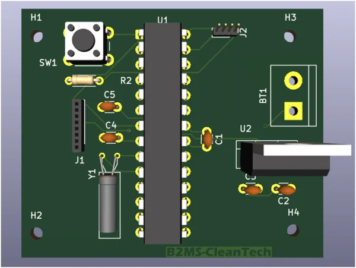
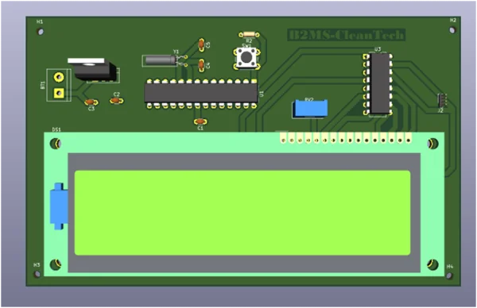

Projet 2 - Boîte noire
1. Introduction
Dans les systèmes embarqués modernes, la collecte et l’analyse de données en temps réel sont essentielles pour le suivi et la sécurité des équipements, notamment dans des domaines critiques comme l’automobile, l’aviation ou le ferroviaire. S’inspirant du fonctionnement des boîtes noires utilisées dans ces industries, ce projet a pour objectif de concevoir un système embarqué capable d’enregistrer et de transmettre en temps réel des données de mouvement (vitesse et orientation) à l’aide d’un capteur inertiel. Les informations sont ensuite visualisées sur une station de contrôle via un écran LCD. Ce projet s’inscrit dans le cadre du Tekbot Robotics Challenge et fait appel à plusieurs compétences majeures : programmation directe des microcontrôleurs ATmega328P sans utiliser de carte Arduino, communication via le protocole I2C, conception de circuits imprimés avec KiCAD, réalisation d’un boîtier cubique de 7 cm, intégration matérielle sur veroboard ou PCB, ainsi que la conception d’une alimentation spécifique.
2. Cahier des charges
a. Objectifs fonctionnels
- Lire les données de vitesse et d’orientation à l’aide du MPU6050
- Utiliser le microcontrôleur ATmega328P sans carte Arduino
- Concevoir un circuit imprimé (PCB) et une alimentation autonome
- Transmettre les données à une station de contrôle via I2C
- Afficher les données sur un écran LCD en mode 4 bits
b. Contraintes techniques
- Le cube doit mesurer 7x7x7 cm, avec une face ouverte pour voir le circuit
- Le microcontrôleur du cube agit en maître I2C
- Le microcontrôleur de la station agit en esclave I2C
- Alimentation externe obligatoire, hors du cube
- Schéma et PCB réalisés avec KiCad
c. Matériels utilisés
- ATmega328P ×2
- MPU6050
- LCD 16x2 (mode 4 bits)
- Alimentation
3. Schéma synoptique
Ce système embarqué est composé de deux unités : une boîte noire et une station de contrôle, connectées via le bus I2C. La boîte noire comprend un capteur MPU6050 qui détecte les mouvements de la main et envoie les données à un microcontrôleur ATmega328P configuré en maître. Celui-ci traite les données et les transmet à la station de contrôle, où un autre ATmega328P, configuré en esclave, les reçoit. Les informations sont ensuite affichées sur un écran LCD. Chaque unité est alimentée séparément par une source de 5V.
4. Description fonctionnelle des différents blocs du système
a. Bloc d’alimentation
- Fonction principale
- Fonctionnement
Ce bloc a pour objectif de fournir une tension continue et stable de 5V nécessaire au fonctionnement des différents composants électroniques du système, notamment le capteur MPU6050, les microcontrôleurs ATmega328P et l'écran LCD.
On utilise trois batteries de Li-Ion 3,7V rechargeables montées en série pour obtenir environ 12V.
Le régulateur L7805 reçoit ce 12V en entrée (Vin) et fournit du 5V en sortie (Vout).
Deux condensateurs (330nF à l’entrée et 100nF à la sortie) sont utilisés pour stabiliser la tension et filtrer les parasites:

La simulation sur proteus : Les condensateurs de filtrage ont été omis dans ce schéma pour simplifier la représentation, bien qu’ils soient indispensables en pratique pour assurer la stabilité et réduire le bruit.
b. Bloc d’entrée(dans la boite noire)
Nous avons choisi le capteur MPU6050 parce qu’il intègre un accéléromètre et un gyroscope dans un seul composant. Cela permet de mesurer les mouvements et les rotations de la main avec précision. Il est facile à utiliser grâce au protocole I2C, et il fonctionne bien avec le microcontrôleur ATmega328P. En plus, il est peu coûteux et largement utilisé dans les projets embarqués. D’autres capteurs peuvent faire un travail similaire, comme le MPU9250 (qui ajoute un magnétomètre), le LSM6DS3 (plus récent et plus économe), ou le ADXL34
c. Bloc de commande(dans la boite noire)
- Étape 1 : Prise en main du microcontrôleur ATmega328P
- Le format DIP à 28 broches, comme dans les cartes Arduino Uno
- Les broches d’E/S numériques D0 à D13, pour piloter des LED, relais, etc.
- Les entrées analogiques A0 à A5, pour la lecture de capteurs
- L’interface I2C via SDA (PC4) et SCL (PC5)
- La communication série UART via TX (PD1) et RX (PD0)
- Les broches d’alimentation : VCC, GND, AVCC, AREF
- La broche RESET, généralement tirée à l’état haut via une résistance
- Les broches XTAL1/XTAL2 pour le quartz (utilisé plus tard)
- Étape 2 : Simulation basique de l’ATmega328P dans Proteus
- Nous n'avons pas utilisé les connexions d’alimentation (VCC/AVCC) ni de quartz externe, car elles ne sont pas obligatoires pour les logiques simples dans Proteus.
- Nous nous sommes concentrés sur le comportement des broches dans un exemple réel.
- Un bouton poussoir est connecté à une entrée numérique.
- Nous nous sommes concentrés sur le comportement des broches dans un exemple réel. Lorsqu’on appuie sur le bouton, l’ATmega active un relais via une sortie numérique.
- Ce relais commande une lampe LED 12V, simulant une charge réelle.
- Lorsque le bouton est pressé, le relais s’active et allume la LED.
- Le comportement observé est conforme à la logique attendue et cohérente.
Avant de démarrer le système complet, l’équipe s’est d’abord focalisée sur le microcontrôleur ATmega328P. L’objectif était de comprendre pleinement sa structure interne, ses broches, ainsi que la manière de le configurer et de le simuler.
Nous avons étudié ses principales caractéristiques et son brochage :
Ces éléments nous ont permis de préparer une simulation fiable sous Proteus pour la suite du projet.
Après avoir étudié la configuration du microcontrôleur, nous avons réalisé une première simulation simple sous Proteus, afin de valider son fonctionnement dans un environnement simulé.
À ce stade :
Scénario de simulation : Nous avons conçu un système simple dans lequel :
Le code Arduino correspondant a été compilé dans l’IDE Arduino, puis le fichier .hex généré a été intégré dans Proteus pour tester le comportement du circuit.
Observation :
d. Bloc d’affichage de la station du controle
Pour l’affichage des données au niveau de la station de contrôle, nous avons opté pour un écran LCD équipé d’un module I2C. Ce choix permet de simplifier le montage électronique en réduisant considérablement le nombre de connexions nécessaires entre le microcontrôleur et l’écran. Grâce à cette interface, seules deux lignes (SDA et SCL) suffisent pour transmettre les informations, ce qui laisse davantage de broches disponibles pour d’autres composants. L’écran LCD I2C assure ainsi une lecture claire et en temps réel des données de vitesse et d’orientation envoyées par la boîte noire.
e. La communication I2C
Ce document constitue une présentation détaillée et approfondie du protocole I2C (Inter-Integrated Circuit), qui est un standard de communication série synchrone très répandu dans l’électronique embarquée. Ce protocole facilite l’échange d’informations entre un ou plusieurs maîtres et plusieurs périphériques esclaves en utilisant seulement deux fils, simplifiant ainsi les connexions matérielles tout en assurant une communication fiable et efficace.
- Principe de fonctionnement
- Prise de contrôle du bus
- Transmission d'un octet
- Transmission d'une adresse
- Écriture d'une donnée
- Arbitration
- Clock Stretching
Protocole I2C (Inter-Integrated Circuit), développé par Philips (aujourd’hui NXP) dans les années 1980, est un standard mondial pour la communication série entre circuits intégrés, surtout dans les systèmes embarqués. Il utilise un bus bidirectionnel à deux fils : SDA pour les données et SCL pour l’horloge, permettant à plusieurs périphériques de partager le même canal tout en gérant précisément l’accès. Contrairement à des protocoles comme SPI, I2C minimise le nombre de connexions nécessaires, ce qui simplifie le routage sur circuit imprimé et réduit les coûts. Ce protocole est largement utilisé dans des domaines variés : automobile, domotique, informatique, etc.
L'I2C fonctionne selon un modèle maître-esclave: un ou plusieurs maîtres contrôlent la communication, et les esclaves répondent aux requêtes. Chaque communication commence par une condition Start, suivie de l’adresse de l’esclave et d’un bit de direction (lecture/écriture). Les données sont ensuite échangées octet par octet, chaque octet étant confirmé par un bit d’acquittement(ACK). La communication se termine par une condition Stop, qui libère le bus.
Techniquement, I2C utilise des lignes ouvertes (open-drain) : les dispositifs ne peuvent que tirer les lignes vers le bas, tandis que des résistances pull-up maintiennent le niveau haut par défaut. Cela évite les conflits, notamment en mode multi-maîtres. Enfin, I2C offre une grande flexibilité en termes de vitesse, du mode standard (100 kHz) au mode rapide (jusqu’à 3,4 MHz) et au-delà dans certaines variantes propriétaires.
La prise de contrôle du bus par un maître débute par une condition Start (S), qui est un événement distinctif sur le bus. Cette condition correspond à une transition sur la ligne SDA de l’état haut à l’état bas, alors que la ligne SCL est maintenue à l’état haut. Cette séquence particulière est détectée par tous les périphériques connectés au bus, qui entrent alors en mode écoute, prêts à recevoir des données.
La condition Start joue un rôle fondamental : elle marque l’exclusivité du maître sur le bus, ce qui évite les collisions ou l’interférence avec d’autres maîtres éventuels. Elle sert aussi de synchronisation initiale à la transmission de données, en assurant que tous les appareils sont synchronisés sur le début de la communication.
Les résistances pull-up sur les lignes SDA et SCL maintiennent ces lignes à un état logique haut par défaut, garantissant ainsi que le bus est en repos quand aucune communication n’a lieu.
La transmission des données sur le bus I2C s’effectue par octets (8 bits). Chaque bit est transmis séquentiellement, en commençant par le bit le plus significatif (MSB).
Le protocole impose que chaque bit soit placé sur la ligne SDA pendant que la ligne SCL est à l’état bas. Ensuite, la ligne SCL passe à l’état haut, moment où le récepteur lit la valeur présente sur la ligne SDA. Lorsque la ligne SCL redescend à l’état bas, l’émetteur peut placer le bit suivant sur SDA, et ainsi de suite.
Après l’envoi des 8 bits d’un octet, la ligne SDA est libérée pendant le 9e cycle d’horloge. C’est alors au récepteur de signaler par un bit d’acquittement (ACK) s’il a correctement reçu l’octet, en tirant la ligne SDA à l’état bas. S’il ne tire pas SDA à zéro, un bit de non-acquittement (NACK) est détecté, ce qui indique que la communication doit être interrompue ou qu’une erreur s’est produite.
Ce mécanisme d’ACK/NACK est crucial car il assure la fiabilité des transmissions, permettant au maître de savoir si l’esclave est disponible et prêt à recevoir ou envoyer des données.
Après la condition Start, le maître envoie un octet d’adresse pour identifier l’esclave avec lequel il souhaite communiquer. L’adresse est généralement codée sur 7 bits, suivis d’un bit R/W indiquant si la transaction sera une lecture ou une écriture.
Le protocole prévoit aussi une extension 10 bits pour les réseaux comportant un grand nombre de périphériques, mais cette extension est moins fréquemment utilisée.
Tous les périphériques esclaves surveillent le bus et comparent l’adresse reçue avec leur propre adresse. Celui qui reconnaît son adresse répond alors par un bit ACK en tirant la ligne SDA à l’état bas pendant le 9e bit. Les autres esclaves restent silencieux jusqu’à la prochaine séquence.
Cette étape est essentielle car elle garantit que seules les communications destinées à un périphérique spécifique sont traitées, évitant ainsi toute interférence entre plusieurs périphériques sur le même bus.
Une fois l’adresse reconnue par l’esclave, la phase de transfert des données peut commencer. Le maître transmet alors les octets de données à l’esclave, chaque octet étant suivi d’un bit ACK envoyé par l’esclave pour confirmer la bonne réception.
Le protocole permet d’envoyer autant d’octets que nécessaire dans une même communication, ce qui permet des transferts efficaces et continus.
Pour terminer la communication, le maître génère une condition Stop (P), qui correspond à une transition de la ligne SDA de l’état bas à l’état haut alors que la ligne SCL est haute. Cette séquence indique à tous les périphériques que la transmission est terminée et que le bus est libéré pour une autre communication.
Il existe également une condition Restart, qui est une condition Start générée sans condition Stop préalable, permettant de chaîner plusieurs opérations sur le même bus sans interruption.
Le protocole I2C est conçu pour supporter un mode multi-maîtres, où plusieurs maîtres peuvent tenter d’accéder au bus simultanément. Pour éviter les conflits, un mécanisme d’arbitrage est mis en place.
Lorsqu’un maître commence à transmettre, il surveille la ligne SDA et la compare avec ce qu’il souhaite envoyer. Si un maître détecte que la ligne SDA est forcée à l’état bas par un autre maître alors qu’il tente de la maintenir haute, il comprend qu’il a perdu l’arbitrage et abandonne immédiatement la transmission, laissant le bus libre au maître dominant.
Ce mécanisme garantit qu’aucune collision électrique ne se produit sur le bus et que seule une source transmet à un instant donné. C’est une des forces du protocole I2C, qui permet une coexistence harmonieuse de plusieurs maîtres sur un même bus.
Le clock stretching est une fonctionnalité du protocole I2C qui permet à un esclave de ralentir temporairement la communication lorsqu’il n’est pas prêt à envoyer ou recevoir des données. Cela se fait en gardant la ligne SCL à l’état bas (LOW), empêchant ainsi le maître de continuer à envoyer des impulsions d’horloge. Une fois que l’esclave est prêt, il libère la ligne SCL, permettant au maître de reprendre la transmission. Cette technique est utile, par exemple, lorsque le capteur a besoin de plus de temps pour traiter ou préparer les données. Le maître doit respecter cet étirement d’horloge pour éviter des erreurs de communication.

f. Communication I2C entre MPU6050 et ATmega328P
Dans notre projet, le microcontrôleur ATmega328P communique avec le capteur MPU6050 à l’aide du protocole I2C. Ce protocole permet de transmettre les données d’accélération et de rotation via deux fils (SDA et SCL). Le MPU6050 agit comme esclave, et l’ATmega328P comme maître.
- Fonctionnement de la liaison I2C
- SDA (Serial Data Line) : ligne bidirectionnelle pour l’échange des données, connectée à la broche PC4 de l’ATmega328P.
- SCL (Serial Clock Line) : ligne d’horloge générée par le maître, connectée à la broche PC5 de l’ATmega328P.
- Envoi des commandes et réception des données
- Le maître (ATmega328P) commence par envoyer une commande au MPU6050, qui consiste à spécifier l’adresse du registre interne dont il souhaite lire la valeur. Par exemple, pour lire l’accélération sur l’axe X, il envoie l’adresse du registre ACCEL_XOUT_H.
- Cette commande est envoyée via le bus I2C sous forme d’une trame contenant l’adresse de l’esclave, suivie de l’adresse du registre ciblé.
- Une fois la commande reçue, le MPU6050 prépare la donnée correspondante et la transmet dès que le maître la demande.
- Le maître récupère alors la ou les valeurs envoyées par le capteur, généralement sur plusieurs octets, qu’il traite ensuite pour en extraire l’information de mouvement (accélération, rotation, température).
La connexion matérielle entre le MPU6050 et l’ATmega328P s’effectue via le protocole I2C (Inter-Integrated Circuit), qui utilise deux lignes de communication :
Sur le bus I2C, le dispositif qui initie la communication est appelé maître, tandis que celui qui répond s’appelle esclave. Dans notre cas : L’ATmega328P joue le rôle de maître, c’est lui qui contrôle le bus, génère l’horloge, et initie les échanges. Le MPU6050 est l’esclave, il attend que le maître lui demande des données spécifiques. Le maître démarre la communication en envoyant une adresse unique correspondant à l’esclave (ici l’adresse I2C du MPU6050, généralement 0x68), suivie d’une commande indiquant quel registre ou donnée il souhaite lire.
La communication suit ce processus
5. Etapes de validation avant PCB
a. Étape 1 : Communication I2C entre deux Arduino (Test de base)
Afin de valider le fonctionnement de la communication I2C entre deux microcontrôleurs en utilisant un exemple simple : un bouton poussoir et une LED.
Composants utilisés :
- 2 cartes Arduino UNO
- 1 bouton poussoir (sur le maître)
- 1 LED (sur l’esclave)
- Câblage SDA/SCL entre les deux cartes
Fonctionnement :
- L’Arduino maître lit l’état d’un bouton poussoir connecté en entrée.
- Cet état (appuyé ou relâché) est transmis à l’Arduino esclave via le protocole I2C.
- L’esclave reçoit cette donnée et contrôle une LED : elle s’allume si le bouton est appuyé, s’éteint sinon.
But de l'étape :
- Apprendre à configurer le bus I2C (maître/esclave).
- Vérifier la synchronisation et la fiabilité de la communication.
- Observer une réponse simple à un signal I2C.
b. Étape 2 : Remplacement par des modules réels (MPU6050 et LCD)
Pour simuler une application plus réaliste en utilisant des capteurs réels(MPU6050) et un afficheur(lCD), tout en gardant la communication I2C entre deux cartes.
Composants utilisés :
- MPU6050 (capteur accéléromètre/gyroscope) sur le maître
- Écran LCD (type I2C 16x2) sur l’esclave
- Deux cartes Arduino
Fonctionnement :
- Le capteur MPU6050 collecte les données d’accélération et de rotation.
- Ces données sont lues par l’Arduino maître via I2C.
- Le maître envoie ensuite les valeurs traitées à l’esclave.
- L’Arduino esclave reçoit les données et les affiche sur le LCD.
But de l'étape :
- Remplacer des composants de test par des modules intelligents.
- Manipuler un capteur complexe avec acquisition de données.
- Gérer l'affichage distant d'informations, toujours via I2C.
- Approfondir le protocole I2C dans un cas concret (multi-esclaves potentiels, synchronisation).
c. Étape 3 : Intégration avec ATmega328P (préparation au PCB)
Afin de remplacer la carte Arduino par le microcontrôleur brut (ATmega328P), et de simuler les conditions réelles d’un circuit imprimé.
Composants utilisés :
- 2× ATmega328P
- 2× Quartz
- 4× Condensateurs 22 pF
- 1× MPU6050
- 1× Écran LCD 16x2 avec interface I2C
- 2× Boutons poussoirs
- 2× Résistances 10 kΩ
- Fils de connexion (Dupont)
- Breadboard
Fonctionnement :
- L’ATmega328P est programmé avec le même code que celui utilisé sur une carte Arduino, à l’aide d’un programmateur externe (comme USBasp ou Arduino as ISP).
- Les deux ATmega328P communiquent via le protocole I2C :
- L’un joue le rôle de maître (elle collecte les données du MPU6050).
- L’autre joue le rôle d’esclave (elle affiche les données sur un écran LCD I2C).
- Les microcontrôleurs sont utilisés en mode "standalone" (hors carte de développement).
- Connectés sur breadboard avec :
- Un quartz et deux condensateurs 22 pF pour chaque ATMEGA328P pour générer l’horloge.
- Une alimentation 5V stable.
- Un bouton poussoir relié à la broche RESET de chaque ATmega.
- Une résistance de 10 kΩ connectée entre la broche RESET et VCC, pour garantir un redémarrage stable.
But de l'étape :
- S’assurer que le microcontrôleur fonctionne correctement en mode autonome.
- Tester la communication I2C dans les conditions matérielles réelles du futur PCB.
- Préparer l’intégration finale des composants sur un PCB personnalisé.
Code_maitre.ino
#include <Wire.h>
#include <MPU6050.h>
MPU6050 mpu;
float ax, ay, az;
const float threshold = 0.2;
String direction = "";
void setup() {
Serial.begin(9600);
Wire.begin(); // Maître
mpu.initialize();
if (!mpu.testConnection()) {
Serial.println("Erreur MPU6050");
while (1);
}
Serial.println("MPU6050 OK");
}
void loop() {
int16_t rawAx, rawAy, rawAz;
mpu.getAcceleration(&rawAx, &rawAy, &rawAz);
ax = rawAx / 16384.0;
ay = rawAy / 16384.0;
az = rawAz / 16384.0;
// Détection de direction
if (ax > threshold) direction = "Gauche";
else if (ax < -threshold) direction = "Droite";
else if (ay > threshold) direction = "Arriere";
else if (ay < -threshold) direction = "Avant";
else if (az > threshold) direction = "Haut";
else if (az < -threshold) direction = "Bas";
else direction = "Stable";
// Envoi vers esclave
Wire.beginTransmission(8); // adresse esclave
Wire.write(direction.c_str()); // envoyer la direction comme texte
Wire.endTransmission();
Serial.print("Direction envoyée : ");
Serial.println(direction);
delay(300);
}
Code_esclave.ino
#include <Wire.h> // Bibliothèque pour communication I2C
#include <LiquidCrystal_I2C.h> // Bibliothèque pour écran LCD I2C
#include <MPU6050.h>
LiquidCrystal_I2C lcd(0x27, 16, 2); // LCD I2C
String receivedDirection = "";
void setup() {
Wire.begin(8); // Adresse de l'esclave
Wire.onReceive(receiveData);
lcd.init();
lcd.backlight();
lcd.setCursor(0, 0);
lcd.print("Pret a recevoir");
}
void loop() {
// Affiche la dernière direction reçue
lcd.setCursor(0, 0);
lcd.print("Dir: "); // Nettoyer la ligne
lcd.setCursor(5, 0);
lcd.print(receivedDirection);
delay(200);
}
void receiveData(int bytes) {
receivedDirection = ""; // réinitialiser
while (Wire.available()) {
char c = Wire.read();
receivedDirection += c;
}
Serial.print("Recu : ");
Serial.println(receivedDirection);
}
Pourquoi cette Démarche ?
La réalisation d’un PCB nécessite des choix précis de composants et un bon fonctionnement garanti en amont. Cette démarche par étapes nous a permis de :
- Identifier les erreurs éventuelles (bruit sur la ligne I2C, mauvais câblage, alimentation instable…).
- Tester progressivement les modules dans un environnement de développement.
- Réduire le risque d’erreur lors de la conception du PCB.
- Avoir une base fonctionnelle avant le passage à la fabrication.
6. Réalisation du PCB
a. PCB de la boite noire
Conception du schéma intégrant le microcontrôleur ATmega328P, le capteur MPU-6050 et les connecteurs.
Attribution des empreintes physiques correspondant aux composants.
Verificaton des erreurs (DRC)
Ajustement de la disposition pour optimiser l’espace et faciliter le routage.
Routage des pistes
Définition des contours du PCB (Edge Cuts)
Visualisation 3D du PCB
télécharger le pcb de la boite noire
b. PCB de la station de contrôle
Conception du schéma intégrant le microcontrôleur ATmega328P, le capteur MPU-6050 et les connecteurs.
Anotation
Attribution des empreintes physiques correspondant aux composants.
Verificaton des erreurs (DRC)
Organisation du PCB
Définition des contours du PCB (Edge Cuts)
Plan de masse GND
Routage
Visualisation 3D du PCB
téléchager le pcb de la station de contrôle